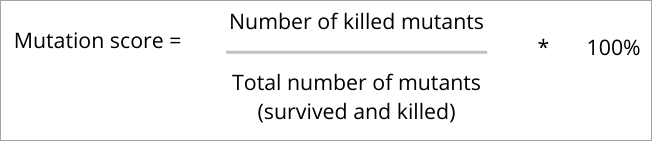

class: center, middle # Mutated .NET .footnote[MS Tech Summit - 02.12.2022] --- class: center, middle # Disclaimer (actually two) ??? - The presentation is prepared in remark.js - If anyone knows what mutation tests are or has used them, this presentation is not for them --- # Who am I? .left-column-33[<div> </div>] .left-column-66[<div> <div class="myName">Mikołaj Korbanek</div> <div>Senior Fullstack Developer</div> <div>.NET + React</div> <div>Objectivity</div> <div>Mentor</div> <div>Photography</div> </div>] --- # Agenda - Why do we need mutation tests? - How do mutation tests work? - Examples of mutations - Some vocabulary - Demo - Pros and cons - Is it worth it and if so, when? --- class: center, middle # Why do we need mutation tests? ??? The purpose of Mutation Testing is to ensure the quality of test cases. They check whether our tests are able to detect changes (mutations) in the source code. --- class: center, middle # How does this happen? ??? Let's start first with what types of mutations there are, and then try to answer the question of what mutations are. --- # Example mutations - Equality operators <table class="exampleMutations"> <tr> <th>Original</th> <th>Mutated</th> </tr> <tr> <td>></td> <td><</td> </tr> <tr> <td>></td> <td>>=</td> </tr> <tr> <td>>=</td> <td><</td> </tr> <tr> <td>>=</td> <td>></td> </tr> <tr> <td><</td> <td>></td> </tr> <tr> <td><</td> <td><=</td> </tr> <tr> <td><=</td> <td>></td> </tr> <tr> <td><=</td> <td><</td> </tr> <tr> <td>==</td> <td>!=</td> </tr> <tr> <td>!=</td> <td>==</td> </tr> </table> .source[Źródło: https://stryker-mutator.io/docs/stryker-net/mutations/] --- # Example mutations - Linq methods <table class="exampleMutations"> <tr> <th>Original</th> <th>Mutated</th> </tr> <tr> <td>SingleOrDefault()</td> <td>Single()</td> </tr> <tr> <td>Single()</td> <td>SingleOrDefault()</td> </tr> <tr> <td>OrderBy()</td> <td>OrderByDescending()</td> </tr> <tr> <td>AsEnumerable()</td> <td>Reverse()</td> </tr> <tr> <td>Any()</td> <td>All()</td> </tr> <tr> <td>Take()</td> <td>Skip()</td> </tr> <tr> <td>...</td> <td>...</td> </tr> </table> .source[Źródło: https://stryker-mutator.io/docs/stryker-net/mutations/] --- # Example mutations - Literals (String) <table class="exampleMutations"> <tr> <th>Original</th> <th>Mutated</th> </tr> <tr> <td>"foo"</td> <td>""</td> </tr> <tr> <td>""</td> <td>"Stryker was here!"</td> </tr> <tr> <td>$"foo {bar}"</td> <td>$""</td> </tr> <tr> <td>@"foo"</td> <td>@""</td> </tr> <tr> <td>string.Empty</td> <td>"Stryker was here!"</td> </tr> </table> .source[Źródło: https://stryker-mutator.io/docs/stryker-net/mutations/] --- class: center, middle # Let's define a mutation test for ourselves --- class: center, middle # Let's define a mutation test for ourselves Mutations are small but thoughtful changes to the *source* code to verify that our tests are testing our code well. **false-positive** --- class: center, middle # What about code coverage? --- class: center, middle # What about code coverage? Checking code coverage will not tell you everything about the effectiveness of your tests. ??? Imagine a sandwich with jam. A coverage check will tell you that 80% of the sandwich is covered in jam, and a mutation test will tell you that it is strawberry jam, not peach jam.... --- class: center, middle # It's almost live coding We just need to explain a few more words to each other ??? Not everyone likes it, but it will allow us to get through the demo more easily. --- # Mutant .center[] --- # Mutant It is simply an altered version of the source code. After running the test data through the mutant - the test should return **different** results than the original source code. --- # Survived Mutants These are mutants that are still alive after the test data is run through the original and mutated variants of the source code. These mutatnts must be killed. .mutantFailed[**(Test failed)**] .center[] --- # Killed Mutants These are mutations that are killed after mutation testing. We get them when we get different results from the original and mutated versions of the source code. .mutantSucceed[**(Test succeed)**] --- # Equivalent Mutants They are closely related to live mutants, except that, they are "alive" even after they run the test data. What makes them different is that they have the same meaning as the original source code, even though they may have a different syntax. Such mutations are ignored. --- # Mutation Score This is a score based on the number of mutants of a given type: .center[] Our goal should be to achieve a high mutation score. ??? Equivalent mutations are not taken into account when calculating the mutation score. Achieving 100% should be our inch, but it is not necessary. It's like with code coverage. The more the better, but 80-90% is realistic. --- class: center, middle # So what does it mean to kill a mutant? ??? When we change a part of the program through mutation tests, we create an alternative version of the application, which is called a mutant. The tests then check it, and if the test suite rejects the mutant (which we hope it does), we say it killed the mutant. --- class: center, middle # DEMO --- # Pros & Cons of Mutation Testing <table class="prosConsTable"> <tr> <th>Pros</th> <th>Cons</th> </tr> <tr> <td>They allow you to find weak tests or code</td> <td>Because they are time-consuming in base, it is safe to say that these tests cannot happen without proper configuration</td> </tr> <tr> <td>Mutation results can give us an idea of how useful our tests are</td> <td>Being compliant with such tests takes some time, making it more expensive</td> </tr> <tr> <td>It is possible to detect bugs that are problematic to find by ordinary testing</td> <td>Because this method contains changes to the source code, it cannot be used for black-box testing</td> </tr> </table> --- # Why is it worth it and when to do them? .summaryCategories[Why:] - They improve the quality of our code - We can (in theory) trust our tests - Bugs found even before going into production on Friday at 16 .summaryCategories[When:] - As part of CI/CD - As a git hook (before push) - As a requirement before code review --- class: center, middle # Thank you for your attention! .left-column-33[<div> </div>] .left-column-66[<div> <div class="myName">Mikołaj Korbanek</div> <div class="socials">Twitter: <a href="https://twitter.com/mikolajkorbanek">@mikolajkorbanek</a></div> <div class="socials">LinkedIn: <a href="https://www.linkedin.com/in/mikolaj-korbanek/">@mikolaj-korbanek</a></div> <div class="socials">GitHub: <a href="https://github.com/MikolajKorbanek">@MikolajKorbanek</a></div> <div class="socials">e-Mail: <a href="mailto:mikolaj@korbanek.dev">mikolaj@korbanek.dev</a></div> </div>]